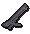
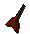
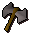
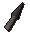
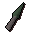

")
Ranged - Alternative Weapons
Introduction | Dwarf Cannon | Darts | Javelins | Throwing Axes
Throwing Knives | Hand cannon | Holy Water | Chinchompas | Salamanders and Swamp Lizards
Throwing Knives | Hand cannon | Holy Water | Chinchompas | Salamanders and Swamp Lizards
Introduction
There are more types of weaponry available to a ranger. Darts, knives, axes and even cannonballs can be employed by rangers.
Every different piece of weaponry has its own advantages, some are cheap and readily available, others are less so but inflict large amounts of damage, such as the cannon. Ultimately, the way one chooses to train the Ranged skill comes down to individual tastes and styles, something that each person must come to learn for themselves.
Dwarf Cannon (Members Only)

To use the dwarf cannon, you have to complete the Dwarf Cannon. When you have completed the quest, you can buy a cannon from the dwarf engineer Nulodion, south of Ice Mountain.
Note: The cannon can only be used to kill NPCs, not players.
There are four main parts to the cannon, and a cannonball mould. You can either buy your cannonballs from other players or make them yourself.
| Name | Image |
| Cannon base | ![[image]](../../img/main/kbase/weapons/ranged/cannon_base.gif) |
| Cannon stand |  |
| Cannon barrel | ![[image]](../../img/main/kbase/weapons/ranged/cannon_barrel.gif) |
| Cannon furnace | ![[image]](../../img/main/kbase/weapons/ranged/cannon_furnace.gif) |
| Cannonball | ![[image]](../../img/main/kbase/weapons/ranged/cannon_cannonball.gif) |
| Cannonball mould | ![[image]](../../img/main/kbase/weapons/ranged/cannon_ammo_mould.gif) |
The cannon will hold thirty rounds of ammunition at a time. You will have to refill it with ammunition every once in a while, so remember to keep an eye on it.
The cannon deteriorates while firing, until eventually disappearing. When this happens, go back and speak to Nulodion, he will give you another one for free. You can only have one dwarf cannon assembled at a time. You will not be given another one if you simply put the cannon into your bank account and then talk to the engineer to get another.
To regain a piece of the cannon from Nulodion for free, the cannon piece must be set up when you lose it. For example, if the cannon is set up and then you die, you can claim a replacement cannon for free from Nulodion.
If however, you lose a cannon piece while it is in your inventory, either by dropping it or dying, Nulodion will charge you a fee for a replacement part or a whole new cannon.
Darts (Members Only)
Darts can be poisoned and are wielded as a one-handed weapon, so you can wear a shield for extra protection while using them. Darts are very fast and extremely dangerous when using the rapid attack option.
| Name | Levels Required | Ranged Attack Bonus | Ranged Strength |
|  Bronze |
1 |
+ 3 | + 1 |
![[image]](../../img/main/kbase/weapons/ranged/iron_dart.gif) Iron |
1 |
+ 4 | + 3 |
![[image]](../../img/main/kbase/weapons/ranged/steel_dart.gif) Steel |
5 |
+ 5 | + 4 |
![[image]](../../img/main/kbase/weapons/ranged/black_dart.gif) Black |
10 |
+ 7 | + 6 |
| Name | Levels Required | Ranged Attack Bonus | Ranged Strength |
![[image]](../../img/main/kbase/weapons/ranged/mithril_dart.gif) Mithril |
20 |
+ 8 | + 7 |
![[image]](../../img/main/kbase/weapons/ranged/adamant_dart.gif) Adamant |
30 |
+ 11 | + 10 |
![[image]](../../img/main/kbase/weapons/ranged/rune_dart.gif) Rune |
40 |
+ 15 | + 14 |
![[image]](../../img/main/kbase/weapons/ranged/dragon_dart.gif) Dragon |
60 |
+ 18 | + 20 |
Javelins (Members Only)
Javelins can be purchased from the Ranging Guild, or found from monster drops.
Javelins are quite powerful and can be wielded with shields to give you better defence.
| Name | Levels Required | Ranged Attack Bonus | Ranged Strength |
![[image]](../../img/main/kbase/weapons/ranged/bronze_javelin.gif) Bronze |
1 |
+ 5 | + 6 |
![[image]](../../img/main/kbase/weapons/ranged/iron_javelin.gif) Iron |
1 |
+ 8 | + 10 |
![[image]](../../img/main/kbase/weapons/ranged/steel_javelin.gif) Steel |
5 |
+ 12 | + 12 |
![[image]](../../img/main/kbase/weapons/ranged/mithril_javelin.gif) Mithril |
20 |
+ 17 | + 18 |
| Name | Levels Required | Ranged Attack Bonus | Ranged Strength |
![[image]](../../img/main/kbase/weapons/ranged/adamant_javelin.gif) Adamant |
30 |
+ 24 | + 28 |
![[image]](../../img/main/kbase/weapons/ranged/rune_javelin.gif) Rune |
40 |
+ 38 | + 42 |
![[image]](../../img/main/kbase/combat/pvp/member/javelin.gif) Morrigan's javelin |
20/78 |
+ 105 | + 145 |
Throwing Axes (Members Only)
Thrown axes can be purchased from the tribal weapons shop in the Ranging Guild.
| Name | Required Level | Ranged Attack Bonus | Ranged Strength |
![[image]](../../img/main/kbase/weapons/ranged/bronze_thrownaxe.gif) Bronze |
1 |
+ 4 | + 5 |
![[image]](../../img/main/kbase/weapons/ranged/iron_thrownaxe.gif) Iron |
1 |
+ 5 | + 7 |
|  Steel |
5 |
+8 | + 11 |
![[image]](../../img/main/kbase/weapons/ranged/mithril_thrownaxe.gif) Mithril |
20 |
+ 12 | + 16 |
| Name | Required Level | Ranged Attack Bonus | Ranged Strength |
![[image]](../../img/main/kbase/weapons/ranged/adamant_thrownaxe.gif) Adamant |
30 |
+ 17 | + 23 |
![[image]](../../img/main/kbase/weapons/ranged/rune_thrownaxe.gif) Rune |
40 |
+ 26 | + 36 |
![[image]](../../img/main/kbase/combat/pvp/member/throwing_axe.gif) Morrigan's throwing axe |
20/78 |
+ 93 | + 117 |
Throwing Knives (Members Only)
Throwing knives are like darts, in that they are deadly and can be poisoned. They are wielded in a single hand, so you are able to hold a shield when using them.
| Name | Required Level | Ranged Attack Bonus | Ranged Strength |
![[image]](../../img/main/kbase/weapons/ranged/bronze_knife.gif) Bronze |
1 |
+ 4 | + 3 |
|  Iron |
1 |
+ 5 | + 4 |
![[image]](../../img/main/kbase/weapons/ranged/steel_knife.gif) Steel |
5 |
+ 8 | + 7 |
![[image]](../../img/main/kbase/weapons/ranged/black_knife.gif) Black |
10 |
+ 10 | + 8 |
| Name | Required Level | Ranged Attack Bonus | Ranged Strength |
![[image]](../../img/main/kbase/weapons/ranged/mithril_knife.gif) Mithril |
20 |
+ 11 | + 10 |
|  Adamant |
30 |
+ 15 | + 14 |
![[image]](../../img/main/kbase/weapons/ranged/rune_knife.gif) Rune |
40 |
+ 25 | + 24 |
Hand Cannon (Members Only)
Those who have completed Forgiveness of a Chaos Dwarf will be able to enter the Chaos Dwarf Battlefield, to the south-west of Keldagrim, and try their hand at some multi-way combat. One of the enemies here, the chaos dwarf hand cannoneer, drops an innovative new weapon that you may want to try: the hand cannon.
The hand cannon is a powerful two-handed weapon with a high maximum hit value, balanced by its reasonably long reload times. The hand cannon fires hand cannon shot, stackable ammo that is placed in the quiver slot. The shot can also be obtained from chaos dwarf hand cannoneers.
| Weapons | Required levels |
Ranged Attack Bonus | Ranged Strength | Location |
![[image]](../../img/main/kbase/weapons/ranged/hand_cannon.gif) Hand cannon |
75 61 |
+ 90 | + 150 | Chaos Dwarf Battlefield |
WARNING! - The hand cannon has a chance of exploding on use, thanks to the combustible nature of its shot, which will destroy it and remove it from your inventory. There is a greater chance of this occuring if you use the hand cannon's special attack, 'Aimed Shot'. The higher your Firemaking level, the lower the chance that your hand cannon will explode.
Holy Water (Members Only)
Holy water is a powerful Ranged weapon that is used just like throwing knives, though it is only effective against demons. Holy water is untradable. When used, you will gain +6 Ranged attack bonus.
To make holy water, you must have completed the Legends' Quest, or be far enough into the quest to know how to make holy water.
You will need to use the golden bowl blessed by Gujuo before you are able to convert the pure sparkling clear water (found within Kharazi pool) into holy water.
Once you have the water, you will need to pour it into enchanted vials (these are stackable in your inventory), which you learn how to make during the Legends' Quests.
Chinchompas (Members Only)
Chinchompas can be obtained through box hunting. These combustible little rodents come in two varieties: normal and red. Once equipped, with the suitable Ranged level, these creatures can be thrown at targets for a one-time explosion. They can also be stacked in your inventory.
| Creature | Required Ranged Level |
Ranged Attack Bonus | Ranged Strength | Location |
![[image]](../../img/main/kbase/skills/hunter/items/chinchompa.gif) Chinchompa |
45 |
+ 45 | + 0 | Woodland Hunting Training Area |
![[image]](../../img/main/kbase/skills/hunter/items/bigchinchompa.gif) Red chinchompa |
55 |
+ 70 | + 15 | Jungle Hunting Training Area |
The chinchompas have three different attack styles: short, medium and long. These determine the length of fuse, so a 'long fuse' attack style will have more chance of success at long distances, and so forth. This makes using the chinchompa quite a tactical choice; with a user having to shift attack styles according to their approach.
Salamanders and swamp lizards (Members Only)
The salamanders and swamp lizards received from net trapping can be used as a two-handed Ranged weapon when filled with their requisite fuels.
| Creature | Levels required |
Combat bonuses | Favoured herb |
![[image]](../../img/main/kbase/skills/hunter/items/swamp_lizard.gif) Swamp lizard |
30 30 30 |
Slash +10 Range +20 Strength +22 |
Guam |
![[image]](../../img/main/kbase/skills/hunter/items/orange_salamander.gif) Orange salamander |
50 50 50 |
Slash +19 Range +29 Strength +31 |
Marrentill |
![[image]](../../img/main/kbase/skills/hunter/items/red_salamander.gif) Red salamander |
60 60 60 |
Slash +37 Range +47 Strength +49 |
Tarromin |
![[image]](../../img/main/kbase/skills/hunter/items/black_salamander.gif) Black salamander |
70 70 70 |
Slash +59 Range +69 Strength +71 |
Harralander |
The fuel for each salamander can be made by mixing 15 lots of swamp tar with their favoured herb (as noted in the 'favoured' herb column) in a pestle and mortar. This will create 15 lots of herb tar that can then be used with the salamander.
Once both the tar and salamander have been wielded the attack style can be changed. Set your style to 'Scorch' and your Strength experience will rise. 'Flare', in turn, will raise your Ranged experience, while 'Blaze' will boost your Magic. This versatility makes the salamander a weapon-of-choice for the rounded adventurer.

More articles in
Ranged
|
|
|
Further Help
If this article does not help you, you may find the following sections of the RuneScape site helpful:
|
|